PillBell user guide
The medication reminder that actually rings.
First launch
When you open PillBell for the first time, a short guide asks for a few permissions. Each one is there only so the reminder can actually ring. PillBell has no internet access and collects nothing:
- Notifications: without them, no reminder can appear.
- Alarms & reminders: lets PillBell ring at the exact minute.
- Full-screen reminders: the alarm can light up the whole screen, like an alarm clock.
- Battery / background: stops your phone from putting PillBell to sleep. The guide shows steps for your exact phone brand (Samsung, Xiaomi and others differ).
- Do Not Disturb access: the reminder gets through even when Do Not Disturb is on.
Adding a medicine
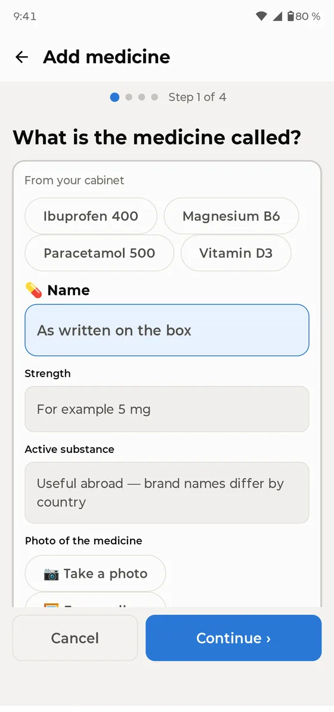
Go to Medicines → Add medicine. A four-step wizard asks for the name, form and strength, the schedule, the amount per dose, and shows a summary. You can also add a photo of the pack, so you always know what to look for.
PillBell handles every common schedule: fixed times a day (no limit), several times a day, every N hours, every N days, selected weekdays, cycles like 21 days on / 7 off, weekly and monthly medicines, alternate days, and half or variable doses (“1 or 2 tablets”).
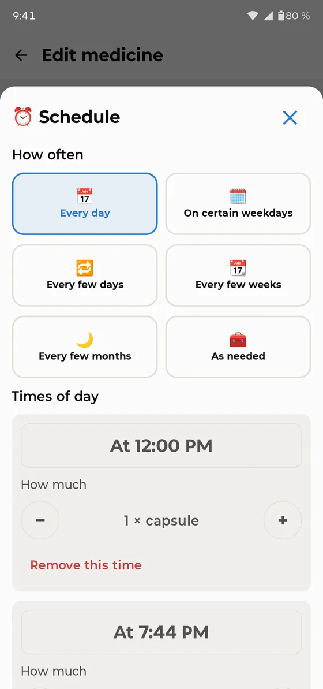
The Today screen
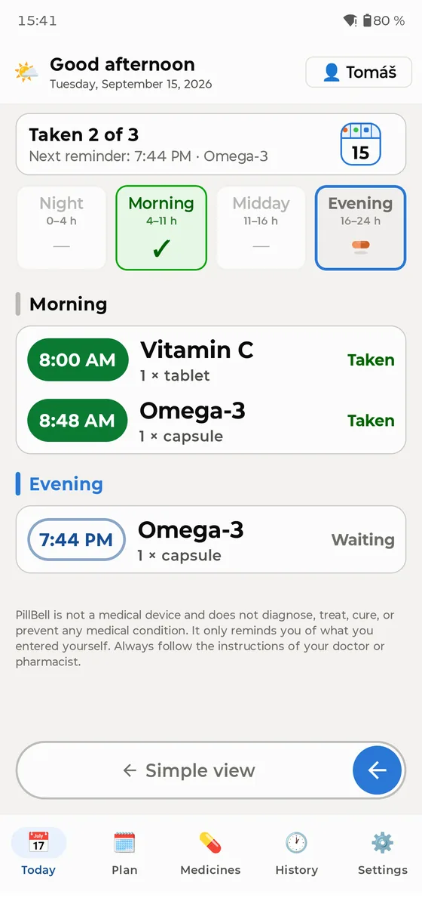
Today works like a daily pill organizer: four compartments: Night, Morning, Midday and Evening. A green ✓ means the compartment is done; pill icons show what is still waiting.
- You see the whole day at once, split into Night, Morning, Midday and Evening. Tapping a compartment scrolls the list to that part.
- Tap a dose to confirm or fix it: Taken, Taken at a different time, Skipped, or back to Not taken.
- You can confirm a dose any time during the day. Taking it more than 30 minutes early is recorded honestly as “Taken early”.
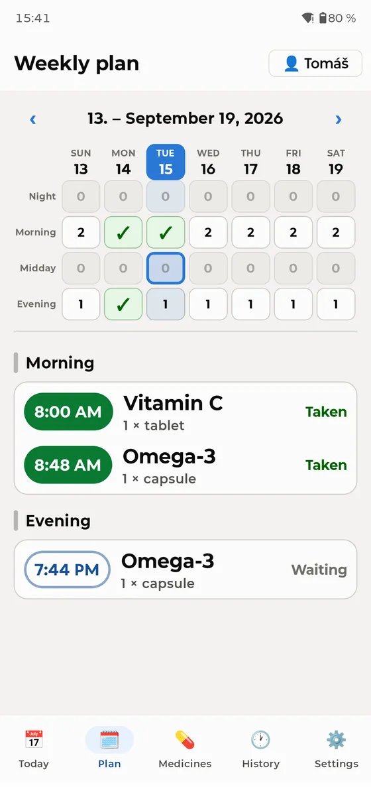
The Plan tab shows the whole week as a pill box: columns are days, rows are parts of the day. A green ✓ means emptied, a number says how many doses are waiting, a zero means nothing is due then. Tap a day to open its schedule below; swipe sideways for the next week.
When it rings
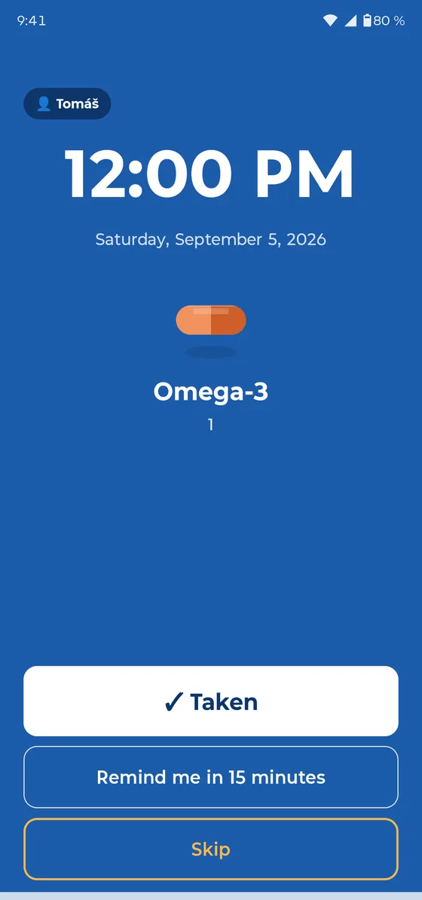
At the scheduled minute PillBell rings like an alarm clock: full screen, even on a locked phone, and it keeps ringing until you answer. It also gets through Do Not Disturb.
- ✓ Taken confirms the dose and stops the alarm.
- Remind me in 15 minutes snoozes the alarm. The app then shows “Snoozed until HH:MM”.
- Skip records the dose as skipped on purpose.
If nobody reacts, the reminder repeats itself after a while. On the lock screen the medicine names are hidden by default for your privacy. If you live alone, you can show them in Settings.
Simple mode
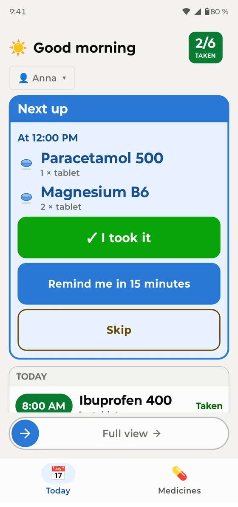
For anyone who finds phones difficult: Settings → Display → Simplified. The whole app becomes one big card: what to take next, and one large button, “I took it”. To return, drag the “Full view” slider at the bottom.
Family profiles
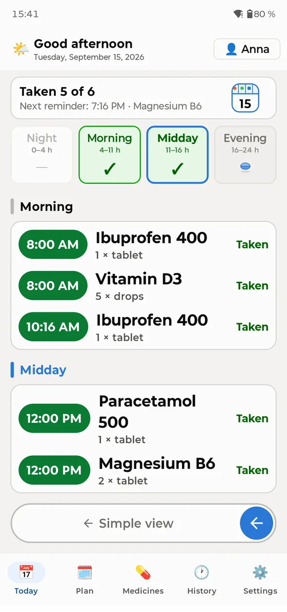
One phone can remind the whole household. Add people in Settings → People. Switch between them with the name button in the top right corner of Today. It also shows who still has doses waiting. Reminders say who they are for (“Anna: 2 medicines”).
Widgets
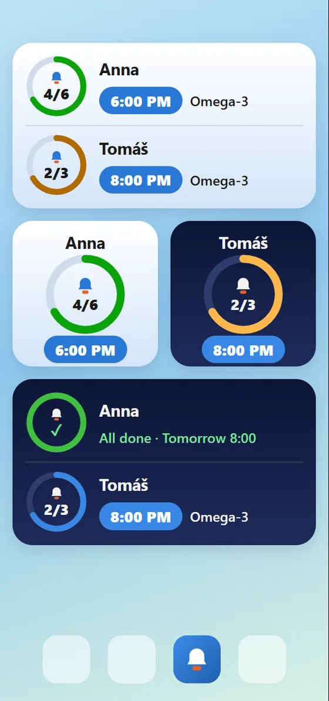
Long-press an empty spot on your home screen → Widgets → PillBell. There are two kinds, each in a light and a dark version:
- Today overview: everyone in the household, with progress, the next time, and the medicines due.
- Person widget (small): when you add it, you choose whose medicines it shows. Put two next to each other: “Anna” and “Tom”.
History & doctor PDF
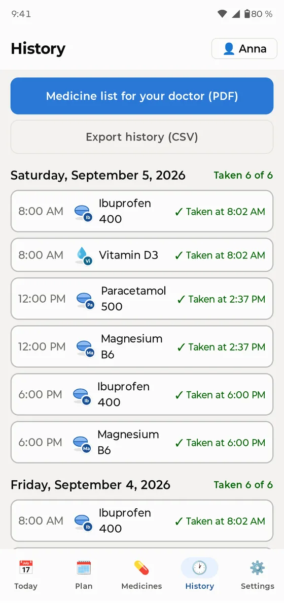
The History tab keeps the last 30 days. One tap creates a PDF medicine list for your doctor: medicines, doses and how regularly you took them. You can also export everything as CSV, and fix past records if needed.
Medicine cabinet & supplies
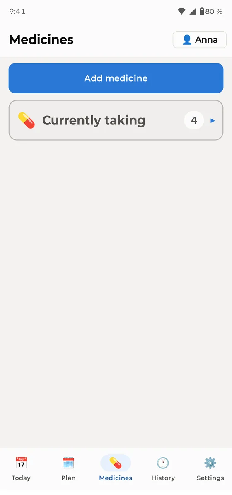
Medicines taken only “as needed” (pain relief, drops…) live in the medicine cabinet. They have no schedule; you log them when you take them. For regular medicines you can track supplies: PillBell counts down and warns you before you run out.
Backups: please read
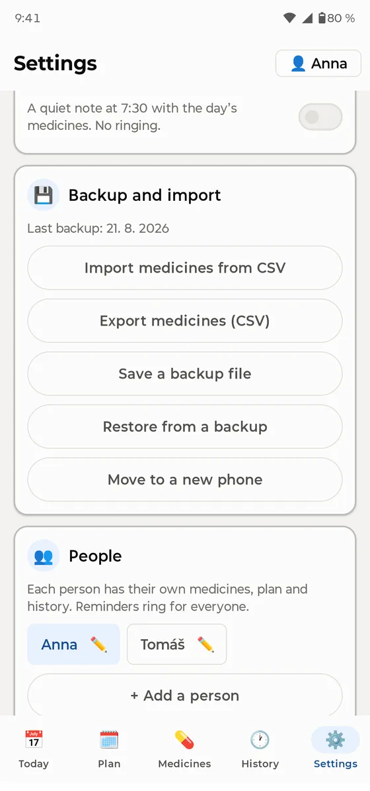
Go to Settings → Backup and export a backup (a single file including medicine photos). Store it anywhere you like: email it to yourself, put it in a cloud drive, or copy it to a computer. To move to a new phone: install PillBell and restore the backup. All reminders are set again automatically. PillBell gently reminds you to back up about once a month.
Keeping reminders reliable
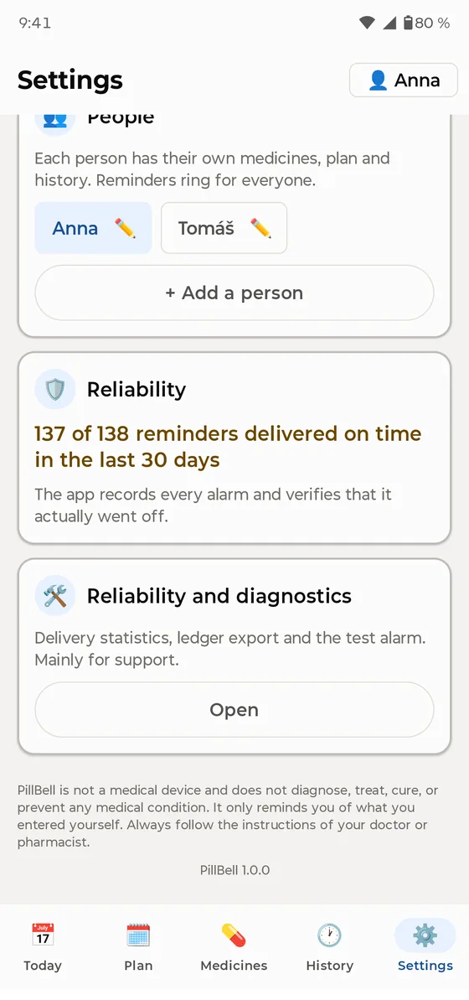
- Complete the battery step in onboarding (you can re-open it in Settings). Many phones silence apps to save battery. This is the most common reason reminder apps go quiet.
- Never force-stop the app.
- Samsung: keep PillBell out of “Sleeping apps”. Xiaomi: allow “Autostart”. The app guides you to the right screen.
- Check Settings → Reliability. PillBell records every alarm and shows how many rang on time in the last 30 days.
FAQ
A reminder didn’t ring. What now? Open Settings → Reliability and the battery guide. Most often the phone’s battery saver silenced the app, and the guide shows how to fix it. Also make sure the app was not force-stopped.
Does it work with Do Not Disturb? Yes, if you granted DND access during setup.
What about travel and time zones? Your schedule stays anchored to your home time, so the gaps between doses never change when you fly.
Can I lock the app? Yes: Settings → App lock (fingerprint or PIN). The ringing alarm and “Taken” always work without unlocking.
Which languages? English, German, Czech, French, Spanish, Italian, Polish, Dutch, Portuguese and Ukrainian.

PillBell is made by Tomelo Apps.
Support: support@tomelo.app · Privacy policy
PillBell is not a medical device and does not diagnose, treat, cure or prevent any medical condition. Always follow the instructions of your doctor or pharmacist.